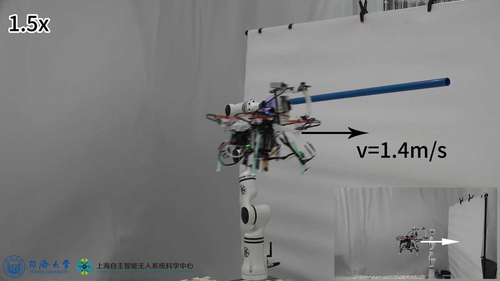
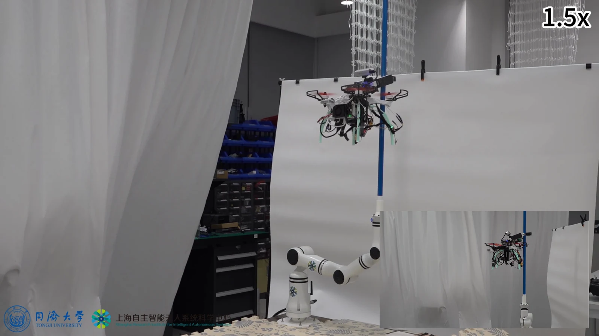

课题组顾羲和博士空中快速停歇文章在Bioinspiration & Biomimetics在线发表！
以碰撞触发快速抓持，结合柔顺缓冲与被动锁定，探索无人机在杆件和天然树枝上的快速停歇。
2026年9月7日，课题组顾羲和博士为第一作者、蒋永康为通讯作者的研究论文“Morphological Intelligence in Dynamic Aerial Docking: A Bistable Tension-Hinge Gripper”在Bioinspiration & Biomimetics在线发表。研究围绕无人机接触环境时的快速响应与可靠锁定问题，提出双稳态张力铰链抓持机构（BTHG），并开展了快速停歇与动态空中对接实验。
让无人机在接触瞬间抓得住
鸟类能够在短暂接触中抓住树枝、吸收冲击并完成停歇。让无人机具备类似能力，需要同时解决响应速度、碰撞缓冲与稳定抓持的问题：接近速度越快，留给传感、决策和执行器动作的时间就越短，接触冲击也越容易扰动飞行姿态。
受鸟类腿爪系统启发，团队将快速接触响应融入机构本体。接触目标时，碰撞推动机构跨越弹性能垒，触发双稳态构型跃迁，由张开状态转入锁定状态。分段铰链与弹性结构同时提供柔顺变形和冲击缓冲，锁定后无需持续供能维持抓持。

机构测试表明，BTHG可在0.16秒内完成触发跃迁。这里的0.16秒对应机构从触发到锁定的响应过程；飞行接近、接触和姿态稳定则由整机实验进一步验证。
在飞行中停歇、释放与再起飞
团队将机构与机载视觉和飞行控制系统集成，在水平杆实验中展示了接近、被动锁定、停歇、主动释放与再次起飞的完整过程，并在最高1.4米/秒的实测接近速度下完成快速停靠。

从规则杆件走向天然树枝
除了水平杆停歇，研究还展示了竖直杆停靠后的导向滑移。在室外天然树枝上，团队采用预设控制序列并配合人工安全监督，演示接近、锁定、停驻与脱离过程，观察机构对真实树枝几何和弹性的适应能力。
这项工作将接触瞬间的快速响应交给物理机构，为机械设计与飞行控制协同提供了新的实验实例，也为无人机停驻观测和持续物理交互提供了研究基础。
论文信息
Morphological Intelligence in Dynamic Aerial Docking: A Bistable Tension-Hinge Gripper
期刊：Bioinspiration & Biomimetics
在线发表：2026年9月7日
DOI：10.1088/1748-3190/ae8f97